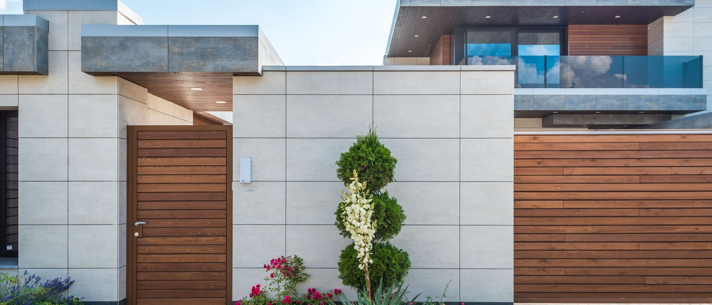
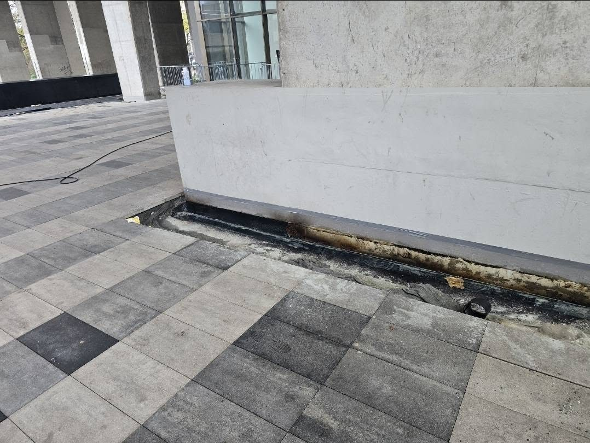
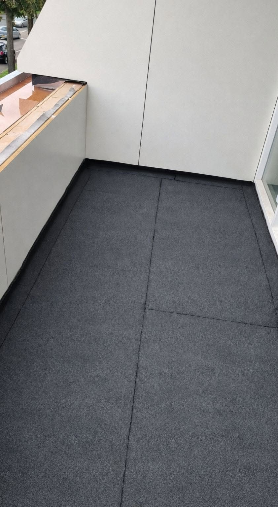

Styk z drzwiami tarasowymi
Izolacja musi wchodzić na ościeżnicę na odpowiednią wysokość. Gdy kończy się tuż pod płytką, przy ulewie woda wchodzi wprost pod drzwi.

Taras nad pomieszczeniem to dach, po którym dodatkowo się chodzi. Rządzi się tymi samymi prawami co połać, tylko z większą liczbą miejsc, którymi woda może wejść.
Klasyczny układ dla tarasu, który ma zostać wyłożony płytką albo deską kompozytową. Na płytę ze spadkiem kładziemy warstwę wodoszczelną, wyprowadzamy ją na ścianę i na próg, montujemy okapnik i odwodnienie liniowe, a dopiero na to idzie okładzina na kleju mrozoodpornym.
Ten układ ma jedną zaletę, której nie da się przecenić: powierzchnia wygląda dokładnie tak, jak inwestor zaplanował, a cała robota chroniąca strop siedzi pod spodem.

W ogromnej większości zgłoszeń przyczyna leży w jednym z nich, a nie w samej okładzinie.
Izolacja musi wchodzić na ościeżnicę na odpowiednią wysokość. Gdy kończy się tuż pod płytką, przy ulewie woda wchodzi wprost pod drzwi.
Bez okapnika woda spływa po elewacji i podchodzi pod płytę. Zimą zamarza pod okładziną i odspaja ją od podłoża.
Płyta wykonana bez spadku albo z kontrspadkiem trzyma wodę przy ścianie. Warstwa izolacji pracuje wtedy cały czas w zawilgoceniu.
Płytki i fuga nie są warstwą wodoszczelną. Jeżeli pod nimi nie ma izolacji podpłytkowej, wilgoć wchodzi w jastrych i szuka drogi dalej.
Płynna membrana PMMA albo PU nakładana wałkiem i zbrojona welonem tworzy jednolitą warstwę bez łączeń. Wchodzi w każdy narożnik, obejmuje próg i kratkę odpływu, a po utwardzeniu zostaje gotową nawierzchnią z posypką antypoślizgową.
Sprawdza się na balkonach, małych tarasach i wszędzie tam, gdzie nie ma zapasu wysokości na jastrych z płytką. PMMA wiąże na tyle szybko, że powierzchnia wraca do użytku tego samego dnia.

Przy tarasie, który już przecieka, kolejność prac zwykle wygląda tak.
Zdejmujemy fragment okładziny i sprawdzamy, czy pod spodem jest izolacja i w jakim stanie jest jastrych.
Skuwamy warstwy, które nie trzymają się podłoża, i odsłaniamy płytę konstrukcyjną wraz z progiem drzwi.
Formujemy spadek, gruntujemy i układamy warstwę wodoszczelną wraz z wyprowadzeniem na ścianę i próg.
Okładzina na kleju mrozoodpornym albo powłoka użytkowa, do tego okapnik i listwy wykończeniowe.
Płyta wystająca poza obrys budynku nagrzewa się i wychładza z obu stron, więc pracuje mocniej niż taras nad pomieszczeniem. Sztywna warstwa na takiej płycie pęka szybciej, dlatego wybieramy tam rozwiązania elastyczne i szczególnie pilnujemy dylatacji przy ścianie.
Zadzwoń i opisz, gdzie pojawia się woda. Przy tarasach zwykle wystarczy jedna odkrywka, żeby wiedzieć, jaki zakres prac ma sens.